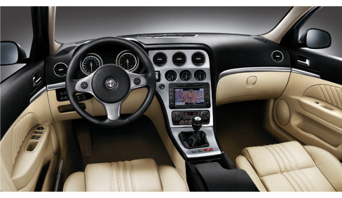

Dashboard and interior trim
The trim material used for the car interior features contributes significantly to the pleasing sensation enjoyed by the car''s passengers.
Even the synthetic leathers immediately convey a gratifying sensation of comfort, solidity, luxury and sportiness.
The slush moulding tecnique used for the dashboard and interior trim ensures outstanding results.
Though this manufacturing process is not new, it has been continually refined through the use of new materials and new processing technologies to create vehicle interior parts that offer high standards of visual and tactile satisfaction.
During the production of parts with complex shapes, trim materials may undergo stretching, polishing and loss of surface texture definition. The importance of these features assumes increasing weight when it comes to assessing the qualitative level of a car.
On the Alfa 159, our choice fell on trim materials with a natural feel.
The original material used to trim the first style model was a faithful reproduction of real leather with all the characteristic physiological traits of natural hide. After undergoing various processes, this symbol of tradition and innovation is transferred to the nickel shells that give rise to the synthetic leathers that are applied to the car''s invisible, functional trim structures.
Slush technology allows us to make the most of this feature and convey it more effectively while enhancing it with high tactile performance due to the pleasing nature of the material and its softness or yield, conferred by the presence of a layer of medium-density expanded polyurethane.
The "leather" trim production stage is followed by foam application. This involves the positioning firstly of the trim and then of a rigid plastic insert required to give the component its structural properties in a resin mould that is the mirror image of the synthetic leather shell.
The polyurethane resin poured into the gap between shell and structure expands to fill the free spaces with soft material.

COURTESY LIGHTS
The front courtesy light includes three lamps with three control switches: it is possible to switch on the corresponding spot light using the outside buttons; the centre button switches the centre light on and off, which is also turned on with a timed delay as described below.
There are two bulbs in the rear courtesy light which can be switched on or off using the relevant button or through a delay timer as described below.
The courtesy light lighting delay is based on a logic managed by the Body Computer whilst the rear courtesy light is operated by the door control units in accordance with a logic transmitted by the Body Computer via the CAN:
Courtesy light activation strategy
- Pressing the button in the front courtesy light operates both the front courtesy light and the rear courtesy light: in particular, with the courtesy lights off, both are switched on and, with the courtesy lights on, both are switched off.
- When any of the doors is opened both the front and rear courtesy lights come on and there is a timed delay of 3 minutes which is reactivated each time a door is opened.
When, on the other hand, the button in the front courtesy light is pressed during the timed delay, the courtesy lights are switched off and the timed delay in progress is zeroed.
- When all the doors are closed at the key-off (TEG extrated), the previous timed delay is zeroed and a 10 second timed delay is activated; (this delay is interrupted in the case of a key-on (insertion of the TEG).
When all the doors are closed at key-on (insertion of the TEG) the courtesy lights are immediately switched off.
- When the TEG is extracted both the front courtesy light and the rear courtesy light come on and a timed delay of 10 seconds is activated.
- Both the front and rear courtesy lights go out at the "door locking" command.
- Both the front courtesy light and the rear courtesy light come on at the "door release" command and a timed delay of 10 seconds is activated.
- If the inertia switch is operated the courtesy lights come on for 15 minutes.
Courtesy light control is deactivated on door opening
The button on the front courtesy light may also disable the control of the courtesy lights upon door opening.
Normally, they come on when one door is opened. It is, however, possible to set the system so that the courtesy lights do not come on when a door is opened.
This is achieved by holding the button down continuously for at least 1.5 seconds (the user is informed of disablement by a confirmation beep).
If the courtesy light is on when the key is pressed, it goes off immediately.
If the courtesy light is off, it comes on when the key is pressed but goes off again after the confirmation beep.
Reactivation of courtesy light control
To re-enable control by the doors, simply press the key again, even for a short time.
Spot-light activation
The front and rear courtesy light spotlights are activated only by pressing the relevant button and are timed for 15 minutes if on at key off (TEG removed). They are not timed if they are activated at key on (TEG inserted). Spot-light activation/deactivation cannot be dimmed.

|
For the rear courtesy light, a direct on/off control (key on spotlight) takes precedence over an indirect on-off command (e.g. door opening). |
Dimmer activation
In all cases described, the lights are turned on and off gradually (dimmer control) over 2 seconds (the 2 second dimmer time is always added to the times described above during activation and deactivation).
The gradual switching on/off (dimmer control) should not be interrupted under any circumstances (not even after another door is opened, key on, etc.).